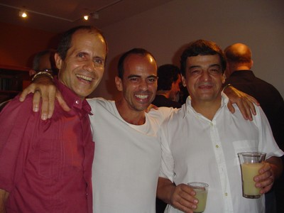
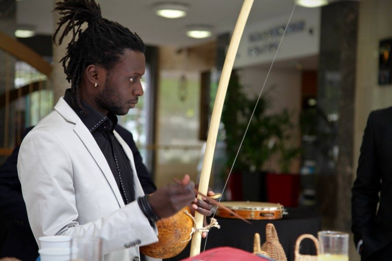

{{eleve.nom}}
{{eleve.bio}}
En 1989, lorsque je suis arrivé à Paris, un certain nombre de capoeiristes étaient déjà passés par ici : des bahianais, cariocas, paulistes, pernanbucains… La plupart d’entre eux sont passés par la France pour ensuite se diriger vers d’autres destins. Dans ces années là, la capoeira n’existait même pas dans l’imaginaire des Français. Le berimbau était pris pour une canne à pêche et la roda de rue était considérée comme une danse exotique venant d’une île quelconque des Caraïbes ou d’Amérique centrale. La communauté brésilienne était pourtant connue, mais plutôt par le biais des musiciens et écrivains qui, dans les années 70 s’étaient exilés en Europe, notamment en France, fuyant, la dictature militaire qui sévissait dans toute l’Amérique Latine à cette époque.
Les galas brésiliens était très en vogue à ce moment et nous, les capoeiristes, nous nous joignions à ces groupes de musiciens et danseuses pour faire des « soirées brésiliennes » se mélangeait alors le samba, les mulâtres, la caipirinha et la capoeira, qui faisait alors ses débuts… Cela nous donnait un peu d’argent pour survivre … Beaucoup d’entre nous, avons fait en plus des petits boulots pour subsister : aide ouvrier, plongeur, serveur, ménage ou même baby-sitter… Les pionniers en France
Quelques rares cours de capoeira existaient à cette époque et se disputaient une poignée d’élèves qui se répartissaient entre les quelques professeurs de ces débuts balbutiants de la capoeira. Je me souviens de Marcos China, Claudio Parafina, Beija-Flor et Grande da Bahia. Il y avait aussi une communauté de capoeiristes talentueux qui se dédiaient plutôt à la danse, comme Cacau, Claudio Basilio et le regretté Claudio Moreno, grand capoeira. Les bahianais ont formé un autre « clan » : le premier a arrivé c’était Break, puis vint Pica-Pau, Nô (un pernamboucain infiltré chez les bahianais). Ces derniers se produisaient essentiellement dans les galas. Plus tard avec l’arrivée de Maître Aranha, ils ont commencé à former une école.
Claudio Paraffina, Chica (Nathalie Ancelin), quelques autres capoeiristes- comédiens (français et brésiliens) et moi-même avons fondé l’association « Entre-Potes ». Nous avions comme objectif la promotion, la divulgation et l’enseignement des arts brésiliens, notamment la capoeira et le théâtre. J’avais le projet personnel de monter « Les Capitaines des Sables » de Jorge Amado. Romance écrite en 1937 et brulée sur la place publique pour être considérée œuvre subversive. Ce projet a rassemblé à Paris en 1991, à l’époque de la guerre du Golf, 23 comédiens sur scène, plus quatre musiciens pour un spectacle de deux heures et demi. Le pari était difficile. Trois mois de répétition à la maison du Brésil, une équipe de plus de 40 personnes et très peu d’argent. En plus de ce scénario quelque peu dramatique, il y avait la guerre du Golf qui vidait les salles de spectacle. Tout le monde se faisait fouiller pour rentrer dans les lieux publics. La peur du terrorisme faisait ses ravages ! Mais le deal était gagné, nous avons pu réunir au Théâtre Maurice Ravel plus de 350 personnes par jour pendant un mois. Plusieurs personnes n’ont pas pu regarder ce spectacle car la salle était toujours pleine.

Sur la photo on voit Claudio Baltar, dit Parafina et Marcos Fustagno, dit China et au centre moi-même lors d’une soirée à Rio chez Parafina. Ces deux personnages qui actuellement vivent au Brésil, font partie de l’histoire de la capoeira en France.
China était arrivé à Paris en 1984 et à cette époque il y avait deux peut être trois capoeiristes sur la capitale. La capoeira faisait ses réels débuts. China a connu toutes les adversités d’un brésilien qui essayait avec le peu de moyens qu’il avait d’introduire un art dans une autre culture. Il a ouvert les portes de la France et de l’Europe à beaucoup de capoeiristes et maîtres de capoeira du Brésil qui aujourd’hui grâce à sa détermination et son professionnalisme, peuvent développer leur travail. Lorsque je suis arrivé à Paris en 1989 c’est Parafina qui est venu me chercher à la Gare d’Austerlitz et il m’a amené chez China qui m’a ouvert les portes de sa maison pour m’accueillir. Disciple de maître Peixinho du groupe Senzala, China était un vrai pionnier de la capoeira en terres étrangères. Malheureusement la mémoire de nos confrères est « courte » et ils oublient rapidement les gens qui leur ont prêté attention et aide dans un moment de leur vie.
Claudio Baltar Parafina est un ex-élève de Maître Camisa. Il est également comédien, auteur et le leader du groupe théâtral brésilien « Intrépida Troupe. » Quand je suis rentré à Rio de Janeiro alors agé de 20ans, au début des années 80, après mon séjour chez maître Limão à São Paulo, je commence à faire une pièce de théâtre : « Les Capitaines des Sables » de Jorge Amado. Parafina était le préparateur corporel et c’était lui qui nous entrainait à la capoeira, aux chants et au maculelê. Parafina était déjà un grand capoeiriste quand j’étais encore un débutant à cette époque. J’ai beaucoup appris avec lui. Nous avons eu par la suite à Paris le plaisir de travailler ensemble sur ce même spectacle mais cette fois dans une version française. Encore au Brésil nous avons été partenaire sur plusieurs spectacles de théâtre et capoeira. En 1993, après avoir vécu 6 ans à Paris, divulgué la capoeira et l’ensemble de la culture brésilienne, Parafina décide de rentrer au Brésil et me confie ses élèves.
Après ce spectacle, j’ai décidé de créer mon groupe de capoeira et de diriger ma propre association. Parafina rentre au Brésil ainsi que quelques autres amis brésiliens. A partir de là, du noyau laissé par Parafina je fonde l’association Macaques – Mouvement Culturel Brésilien. C’est avec ce travail que je vais commencer à construire un projet d’échange culturel entre le Brésil, l’Afrique et la France. Divers élèves, qui plus tard, sont devenus professeurs et instructeurs de capoeira sont passés par Macaques tels que Dartagnan, Zambla, Poireau, Billy et Samba qui est avec moi jusqu’à aujourd’hui. Plus tard, j’ai eu deux autres élèves qui ont participé au développement de notre travail, Calibre et Falcao. Je laisse ici mon modeste hommage à ces compagnons de parcours.
Pendant une décennie, Macaques va s’étendre un peu partout en France et à Paris. Nous avons ouvert plusieurs cours et stages notamment à Saint Denis, Île de Saint Denis, Suresnes, Metz, Nice, Strasbourg, Marseille. Nous avons commencé à développer la capoeira pour les enfants, les handicapés mentaux, les comédiens, danseurs et des jeunes en difficulté. Nous avons également à cette époque commencée avec d’autres enseignants de capoeira à organiser les premières rencontres internationales en Europe. Ces rencontres rassemblaient plus de 400 personnes de la communauté européenne et des brésiliens venus de tous les coins du Brésil. Ces organisations n’ont jamais compté avec une aide quelconque des institutions brésiliennes. Tout était fait de façon artisanale, du t-shirt aux instruments de capoeira. Il faut dire qu’à cette époque il n’y avait pas d’internet ni de téléphones portables. C’est là que China et Paulo Siqueira (Hambourg, Allemagne) ont eu l’initiative de faire le premier journal sur la capoeira en Europe : CapuEurope.
A l’Île Saint-Denis (93), depuis 1993, nous avons développé un travail auprès des jeunes défavorisés pendant presque vingt ans. A Metz, en partenariat avec l’association « « Équipe Rue », nous avons travaillé à partir de 1995 dans un projet d’insertion sociale par le biais de la capoeira. Nous avons organisé plusieurs rencontres au Brésil où des élèves de toute l’Europe participaient. Aujourd’hui confirmé et intégré dans la société française, après un boum spectaculaire dans les années 2000, la capoeira, bien qu’ayant subi quelques détournements ou adaptations à la culture française, est en train de montrer sa valeur et sa force comme art à part entière, comme élément catalyseur de communication et de partages entre les différentes classes sociales et les diverses origines culturelles. La capoeira a la capacité de les mélanger et les intégrer les unes aux autres de façon positive et constructive.
Il est né dans la ville mythique de Santo Amaro, à l’intérieur des terres bahianaises, lieu traditionnel des grandes capoeiras. plus
Maitre Leopoldina est né le 12 février 1933 dans la banlieue de Rio de Janeiro, il est issu d’une famille pauvre. plus
Maitre Leopoldina est né le 12 février 1933 dans la banlieue de Rio de Janeiro, il est issu d’une famille pauvre. plus
Maître Neco appartient à la première génération des maîtres formés par maître Moraes qui à son tour était ... plus
Il est né en 1954 à Rio de Janeiro et a grandi dans une des favelas le plus « chaudes » de Rio de Janeiro. ... plus
Il est né dans la ville mythique de Santo Amaro, à l’intérieur des terres bahianaises, lieu traditionnel des grandes capoeiras. Il était disciple de maître Caiçaras. Petit, il vendait des citrons « limão » dans les marchés de Salvador et après il filait voir les rodas de maître Caiçaras ainsi que celles d’autres maîtres dans le terreiro.
Dans les années soixante, avec beaucoup d’autres bahianais il migre vers le sud du Brésil. São Paulo était l’état qui a le plus accueilli cet exode où des milliers de « nordestinos » (gens du Nord-est du Brésil) ont migré vers des régions plus riches dans l’espoir d’avoir une meilleure condition de vie.
C’est cette génération de capoeiristes qui a implanté la capoeira dans le capital paulistana. Mâitre Ananias l’un de plus vieux maître toujours en vie, Maître Brasilia, Suassuna, Dirceu, Pinatti, Paulo Gomes, Joel, Silvestre (frére adoptif de Limão), Natanael sont quelques-uns des maîtres qui ont implanté la capoeira à São Paulo.
Il est intéressant de noter qu’à cette époque angoleiros et regionalistes travaillaient ensemble.
Les maîtres Suassuna et Brasilia ont ouvert une académia ensemble. Maître Limão et Pinnatti ont également en 1969 ouvert l’Associação de Capoeira São Bento Pequeno.
En effet il avait à cette époque un enthousiame, un certain élan « magique » de pouvoir créer et réaliser après tants d’années d’interdicton et marginalisation de la capoeira. Ce moment allait durer peu: en 1964 le coup d’état perpétré par les militaires brésiliens, ensouflé par la politique du ‘big stick’ américain, a implanté une grosse répression dans tout le pays. La presse, les libertés individuels et politiques ont été poursuivis, la dictature s »est installé et les rodas de rue ont été de nouveau interdites. C’est dans ce contexte que j’ai commencé à pratiquer la capoeira avec mâitre Limão dans son académie à São Paulo dans le quartier de Santo Amaro. (Ne pas confondre avec la ville où il est né, qui a le même nom)
Son académie était très simple :
un ‘sobrado’, une sorte de maison à deux étages, construction typique du début du XXe siècle. L’entrée donnait sur la rue et une escalier nous amenait directement dans le lieu d’entraînement. La première salle était reservée pour la musculation. Un deuxième espace à coté de cette salle était réservé à la roda, avec un cercle peint au sol. Il y avait encore un troisième espace destiné à l’entraînement avec trois petits cercles disposés au sol comme un triangle à l’envers. Ceci était conçu pour faciliter le travail de la “ginga”.
J’ai commencé la capoeira grâce à « Indio », Ronaldo.
Nous étions quatre garçons à s’être inscrit : Indio, Cachalote, Gilvan et moi.
J’avais entre 13 et 14 ans en 1973 et je ne savais pas du tout que la capoeira allait faire partie de ma vie au mois pour les trente années à venir. Je ne savais pas qui était vraiment Maître Limão, je ne connaissait pas sa célébrité ni son parcours d’angoleiro issue directement de la lignée bahianaise, de la génération d’or de la capoeira angola. Je ne connaissais pas non plus l’existence d’une autre capoeira et tous les enjeus historiques et politiques qui existait autour de ces deux styles.
De temps en temps je rencontrais Limão au ‘Banza’ un lieu de restauration rapide dans le quartier du vieux Brooklin, zone sud de São Paulo. Il était toujours très calme, souriant, drôle à l’intérieur de son ‘poncho’ mexicain. Un jour j’ai appris qu’il était mort assassiné à l’intérieur de Bahia sa terre natale. Un coup de couteau a mis fin à ses jour. C’étai la fin d’un grand personnage de la capoeira. J’ai eu la chance de passé environ deux ans à ses cotés. Merci Maître Limão.
Il est né dans la ville mythique de Santo Amaro, à l’intérieur des terres bahianaises, lieu traditionnel des grandes capoeiras. Il était disciple de maître Caiçaras. Petit, il vendait des citrons « limão » dans les marchés de Salvador et après il filait voir les rodas de maître Caiçaras ainsi que celles d’autres maîtres dans le terreiro.
Dans les années soixante, avec beaucoup d’autres bahianais il migre vers le sud du Brésil. São Paulo était l’état qui a le plus accueilli cet exode où des milliers de « nordestinos » (gens du Nord-est du Brésil) ont migré vers des régions plus riches dans l’espoir d’avoir une meilleure condition de vie.
C’est cette génération de capoeiristes qui a implanté la capoeira dans le capital paulistana. Mâitre Ananias l’un de plus vieux maître toujours en vie, Maître Brasilia, Suassuna, Dirceu, Pinatti, Paulo Gomes, Joel, Silvestre (frére adoptif de Limão), Natanael sont quelques-uns des maîtres qui ont implanté la capoeira à São Paulo.
Il est intéressant de noter qu’à cette époque angoleiros et regionalistes travaillaient ensemble.
Les maîtres Suassuna et Brasilia ont ouvert une académia ensemble. Maître Limão et Pinnatti ont également en 1969 ouvert l’Associação de Capoeira São Bento Pequeno.
En effet il avait à cette époque un enthousiame, un certain élan « magique » de pouvoir créer et réaliser après tants d’années d’interdicton et marginalisation de la capoeira. Ce moment allait durer peu: en 1964 le coup d’état perpétré par les militaires brésiliens, ensouflé par la politique du ‘big stick’ américain, a implanté une grosse répression dans tout le pays. La presse, les libertés individuels et politiques ont été poursuivis, la dictature s »est installé et les rodas de rue ont été de nouveau interdites. C’est dans ce contexte que j’ai commencé à pratiquer la capoeira avec mâitre Limão dans son académie à São Paulo dans le quartier de Santo Amaro. (Ne pas confondre avec la ville où il est né, qui a le même nom).
Son académie était très simple :
un ‘sobrado’, une sorte de maison à deux étages, construction typique du début du XXe siècle. L’entrée donnait sur la rue et une escalier nous amenait directement dans le lieu d’entraînement. La première salle était reservée pour la musculation. Un deuxième espace à coté de cette salle était réservé à la roda, avec un cercle peint au sol. Il y avait encore un troisième espace destiné à l’entraînement avec trois petits cercles disposés au sol comme un triangle à l’envers. Ceci était conçu pour faciliter le travail de la “ginga”.
J’ai commencé la capoeira grâce à « Indio », Ronaldo.
Nous étions quatre garçons à s’être inscrit : Indio, Cachalote, Gilvan et moi.
J’avais entre 13 et 14 ans en 1973 et je ne savais pas du tout que la capoeira allait faire partie de ma vie au mois pour les trente années à venir. Je ne savais pas qui était vraiment Maître Limão, je ne connaissait pas sa célébrité ni son parcours d’angoleiro issue directement de la lignée bahianaise, de la génération d’or de la capoeira angola. Je ne connaissais pas non plus l’existence d’une autre capoeira et tous les enjeus historiques et politiques qui existait autour de ces deux styles.
De temps en temps je rencontrais Limão au ‘Banza’ un lieu de restauration rapide dans le quartier du vieux Brooklin, zone sud de São Paulo. Il était toujours très calme, souriant, drôle à l’intérieur de son ‘poncho’ mexicain. Un jour j’ai appris qu’il était mort assassiné à l’intérieur de Bahia sa terre natale. Un coup de couteau a mis fin à ses jour. C’étai la fin d’un grand personnage de la capoeira. J’ai eu la chance de passé environ deux ans à ses cotés. Merci Maître Limão.
Maitre Leopoldina est né le 12 février 1933 dans la banlieue de Rio de Janeiro, il est issu d’une famille pauvre. Très tôt il a perdu sa mère et son père l’a abandonné. Il a donc été élevé par une tante qui le maltraitait et un jour il a pris fuite. Il a dormi dans la rue, a vendu des bonbons dans la station de train – Central do Brésil – qui fait référence à son surnom, surnom qu’il a gardé toute sa vie. En faits, à cette époque pour attirer l’attention des passagers, il imitait le son d’un train qui s’appelait Leopoldina. Il est passé par la maison de correction de l’enfance et l’adolescence – FUNABEM – et a passé quelques temps en taule avec son premier maître de capoeira Quinzinho.
Leopoldina a connu Quinzinho quand il avait 18 ans. Ils se sont rencontrés dans le morro (bidonville) de São Carlos au centre ville de Rio. Quinzinho, selon Leopoldina, boitait d’une jambe mais était très bon en rastera (balayage.) C’était un voyou, chef de gang qui a fini assassiné en prison. Ensuite, Leopoldina a connu un capoeiriste bahianais qui venait d’arriver de l’intérieur de Bahia, il se nommait Artur Emidio. Il était impressionné par sa rapidité et vite il a compris que c’était avec lui qu’il allait continuer son apprentissage.
Un jour Maître Artur l’a invité pour faire une démonstration avec lui et d’autres capoeiristes à Olaria, dans la banlieue de Rio. C’est à cette occasion qu’il a connu Carlos Bahiano Maluco, ce dernier a trouvé un boulot pour Leopoldina comme docker au quai du port de Rio. Cette rencontre a marqué la vie de Leopoldina à jamais. C’est à partir de cette roda d’exhibition que Leopoldina a commencé à rencontré les angoleiros de Rio, la majorité de ces gens venaient de la banlieue : Joel Lourenço, Kadu, Zé Ignorante, Dois de Ouro, Imagem do Cão, sont quelque uns des personnages dont il se souvient. Le quai du port, les malandrins et les rodas de dimanche ont constitué l’univers de Leopoldina, où il a évolué et s’est forgé sa personnalité et son charisme.
La scène de la capoeiragem carioca (typique, de Rio de Janeiro) dans les années 50 avait des illustres personnages : Maître Paraná, grand joueur de berimbau, d’ailleurs il fréquentait beaucoup l’Académie de Artur et est le fondateur du groupe São Bento Pequeno. Le grand Mario Buscapé ( Mario Santos) qui a connu Besouro, fondateur du Groupe Bomfim, maître de Zé Grande qui à son tour a formé maître Cabide. Le fameux Maître Sinhosinho qui était déjà un peu oublié à cette époque, faisait partie de cette élite de capoeiras des années 50 à Rio de Janeiro.
J’ai connu Leopoldina quand il fréquentait les rodas de maître Garrincha à la Puc – Université Catholique à Rio – et à la Maison de l’étudiant dans le quartier du Flamengo, ceci dans les débuts des années 80. Il arrivait très en douceur, sans aucune pression. Habillé avec un gilet, une grande chaine autour du cou avec une dent énorme de sanglier – protection contre les mauvais esprits, « mandingas » (sorcelleries), « muquiranices » (méchancetés) et d’autres pestilences. Il portait un chapeau coco, que je n’ai jamais vu tomber de sa tête. Quand il sentait l’atmosphère un peu lourde, il mettait son contre-egun (sorte de patua magique) pour ne vraiment rien laisser au hasard ! Il jouait avec tout le monde et chantait ses ladainhas, les plus belles que je n’ai jamais entendues ! Après la roda, on allait au bar, boire quelques bières, et lui buvait un soda. Comme un enfant. Je pense que cet esprit enfantin a préservé le vieux en beaucoup de moments difficiles de sa vie. Leopoldina avait une joie de vivre, un positivisme qu’il communiquait à tout le monde. C’est grâce à ce caractère qu’il a commencé à être connu, d’abord au Brésil et puis à l’étranger.
Leopoldina a voyagé ce monde de Dieu d’un bout à l’autre : Nous avons été ensemble en Allemagne, en Hollande, au Sénégal et en France, chez moi, plusieurs fois. Mais, lui, il était toujours invité par des maîtres et des disciples, il a connu presque tous les pays de l’Europe Occidentale, les États-Unis, l’Australie et l’Indonésie. Dans tous ces lieux il était toujours le centre de l’attention. Ceci sans aucun effort, naturellement. Sa présence illuminait tout !
Quand nous avons été ensemble au Sénégal il a fait un énorme sucées. A Gorée les enfants allaient derrière lui, en file, à travers les rues de terre battue, ils étaient vingt, parfois trente enfants à le suivre pendant qu’il jouait de son berimbau comme le flutiste de Hamelin. Jamais je n’oublierais cette image : A Dakar, il a dragué une femme et moi j’ai été « choisi » pour traduire les galanteries de Leopoldina durant toute la nuit pendant que les autres gars se faufilait en douceur. Encore à Gorée, durant notre séjour, le maître était le dernier à se coucher et le premier à se lever. Quand je me réveillais dès qu’il entendait ma voix il s’approchait avec sa marche nonchalante et demandait son petit déjeuneur : bouillis d’avoine !
Dans la roda le maître n’était pas un « vaillant ». Il était fier de ne jamais avoir tapé personne. Je me souviens des divers jeux qu’il a faits où il montrait toute son habilité et le danger de son art sans jamais faire un acte de violence. Sans jamais commettre une bavure. Bien au contraire quand la roda était trop « chaude » il arrêtait le jeu et demandait du calme. C’est grâce à ses principes et d’autres qu’il est devenu, peut-être, le maître le plus populaire du Brésil et surement le plus aimé. Dans un autre contexte le maître a fait preuve de beaucoup de courage et de vaillance pour affronter sa maladie. J’ai vu Leopoldina s’étioler peu à peu à cause de son cancer de la prostate. Il a perdu plusieurs kilos. A subi trois chirurgies, a perdu le contrôle de la vessie et a dû utiliser une sonde. Même dans cet état de santé assez difficile j’ai vu Leopoldina rentrer, avec sa poche d’urine cachée sous son pantalon, dans une roda et jouer avec tout le monde. Le maître a perdu la santé mais pas la noblesse ! Quand je l’appelais de Paris pour avoir de ses nouvelles il me répondait : « Je vais mieux de ce que je le mérite »
Une fois quand j’étais chez lui à la Cité de Dieu, dans la zone ouest de Rio, devenu célèbre grâce au film du même nom, il est sorti avec moi à pied, à travers les labyrinthes des rues et ruelles de la fameuse cité. Partout où il passait il était salué : « Ça va maître ? », « Bonjour Maître », « Salut maître », « Leopoooooooldinaaa ! » Criait un autre. Et de temps en temps : « Salut Leozinho », disait une fille d’une voix toute douce. Alors Leopoldina faisait un sourire de toutes ses dents et disait : « Elle m’adore »
Ce même jour, il m’a dit qu’il allait dormir tôt par ce que le lendemain il allait à São Paulo (à 400 kilomètres de Rio). Il allait prendre sa bagnole « branchée » avec une grosse image d’aigle dessiné sur le capot et allait jouer la capoeira à la Place de la République, dans la plus grande capitale du Brésil. En faits, Leopoldina partait de temps en temps pour jouer à São Paulo dans cette célèbre roda, une des plus traditionnelles du Brésil avec celle de Caxias à Rio. Il disait que là-bas il était bien traité. Il me parlait du grand maître Ananias actuellement un des plus vieux maîtres encore en vie, de maître Meinha et d’autres dont je ne me rappelle plus.
Moi-même, en réalité, je n’ai pas été un élève du maître comme l’était maître Nestor. Je n’ai pas eu ce privilège d’avoir appris la dance des esclaves avec lui. Mais je sais aujourd’hui que le vieux, m’a appris énormément! Il m’a transmis tous ses enseignements de « malandragem », de « mandinga », de noblesse, de sagesse de vie, sans jamais avoir prétendu quoi que ce soit. C’est vrai que je n’ai pas été son élève, mais avec certitude j’étais son disciple. Je crois aussi que sa façon unique de véhiculer un savoir faisait aussi sa force : apprendre sans prétendre, apprendre sans rien dire, enseigner en silence, passer tout un art noble avec l’humilité d’un serf. « Ah maître, aujourd’hui je regrette de ne pas avoir été à la hauteur de ton enseignement. Je regrette, dans ma rusticité, de ne pas avoir su comprendre la finesse de ton savoir ».
Pendant les derniers temps le maître était un peu triste. Il disait qui les capoeristes de Rio ne le reconnaissait pas à sa juste valeur. Il disait qu’à São Paulo et même à Rio Grande do Sul il était plus aimé, plus reconnu qu’à Rio de Janeiro. C’est peut-être pour cela qu’il a choisi de mourir à São José dos Campos, intérieur de l’état de São Paulo, proche de celui qui pendant toute la période difficile du maître était à son côté comme un fils : maître Tinta Forte. Maître Tinta Forte a été à coté du maître dans les pires moments de sa vie. Lorsque son éclat visible était voilé, au moment où son humeur et ses petites blagues faisaient moins d’effet. Comme dit l’expression : « tout le monde est ami mais dans la douleur les parents sont les dents et encore ils nous mordent. »
La disparition de maître Leopoldina confirme la fin d’une époque qui a débuté avec la mort de maître Pastinha et de maître Bimba et qui a continué avec la presque totale disparition de tous les vieux maîtres angoleiros bahianais. Le décès de Leopoldina annonce que nous arrivons à la fin d’une époque des grands maîtres, des grands représentants et militants de la capoeira angola qui ont coexisté et sont partis. Leopoldina était un phare qui illuminait des milles et milles de noir dans la nuit et qui le 17 octobre 2007 s’est éteint pour toujours. Sa parole avait une résonance. Son intégrité nous assurait que la vie valait la peine d’être vécue. Nous avons encore quelques maîtres de cette génération vivants. Quelques résistants qui combattent encore et qui éclairent nos chemins de leurs présences. Mais un jour eux aussi partiront. Prions alors pour que les grands maîtres du futur soient aussi bons que ceux qui quand ils partent, nous laissent un peu plus orphelins et silencieux et en même temps ils nous rappellent que nous aussi sommes des mortels.
J’ai fait une petite « chula » pour Leopoldina :
Central do Brasil
Sete horas da manhã
O trem vem apitando
Central do Brasil
Leopoldina vem chegando
Olha bala minha gente!
Olha bala minha gente!
O Mestre Leopoldina
Ele vai já em frente
Olha bala minha gente!
Olha bala minha gente!
O Mestre Leopoldina
Ele deixou agente…
Mestre Leopoldina 12/02/1933 – 17/10/2007
Maître Neco appartient à la première génération des maîtres formés par maître Moraes qui à son tour était élève du Centre de Capoeira Angola dirigé par maître Pastinha.
Il est à l’origine de la création, par maître Moraes, du Groupe de Capoeira Angola Pelourinho: GCAP à Rio de Janeiro.
Dans un deuxième temps il a fondé son actuel Groupe So Angola. Depuis 2003 Maître Neco et Maître Boa-Vida font un partenariat à travers leurs respectifs groupes.
Maître Neco Pelourinho est pour nous une référence dans notre parcours.
Sa compétence, son savoir et son intégrité nous enrichit et nous enracine…
Il est né en 1954 à Rio de Janeiro et a grandi dans une des favelas le plus « chaudes » de Rio de Janeiro.
Maître Garrincha a fait un « sacré » parcours dans sa vie.
Il a commence tôt la capoeira et dès l’âge de 11 ans il participe au fondement du groupe Senzala.
En fait, ce groupe qui sort de la classe moyenne carioca adopte Garrincha et Sorriso (Maître Sorriso) deux enfants des bidonvilles de Rio dans leur groupe.
Plus tard Garrincha se forme en Éducation Physique et devient un des grands maîtres de son époque.
Très doué musicalement maître Garrincha sait mener une roda comme personne.
J’ai était disciple de maître Garrincha durant longtemps.
Mais le temps ici perds son importance comparée à tout ce qu’il m’a apporté.
Comme dit l’expression « le savoir c’est la seule richesse que plus on partage, plus elle nous enrichit » Je lui doit beaucoup.
On a dû se quitter à cause des « mouvements » de la vie mais il reste et restera toujours mon Maître. Maître Paulo Boa-Vida.
 Samba, Edouard Calippe. Il a commencé la capoeira avec Maître Paulo Boa-Vida depuis l’âge de 7 ans. Parallèlement à sa pratique de la capoeira, il fait du théâtre, cinéma, écrit du rap et dessine. Il est également créateur d’une marque de vêtement dans le cadre du commerce équitable avec son école (le lycée de la solidarité international.)
{{eleve.bio}}
Ébano, né en 1996, est initié des ses plus jeunes années à l’art de la Capoeira. Il travaille dans la création audiovisuelle et poursuit ses études sur Paris.
Margot, né en 1998, a grandi à Rio de Janeiro, Brésil, où les chants de Capoeira bercent ses premiers pas. En plus de sa passion pour les Arts, le dessin et l’écriture, elle développe sa pédagogie et son élocution en devenant formatrice BAFA.
Florian alias Padeiero. Elève de mestre Paulo Boa Vida depuis 2006. Ayant été initié à la capoeira régionale dans le sud de la France c est 2 ans plus tard qu’il rencontre Paulo et la capoeira Angola. « Affilié aux enseignements issus du Brésil et de maîtres angoleiros notre travail prends ses racines et ses fondements au coeur des traditions. » dit-il..
Guaranà Né le 12 janvier 1975 A commencé la capoeira, a 33 ans. Auteur, compositeur, interprète, il réalise des albums de musique sous le nom de Tiger (Dee Dee et Baby). Directeur artistique spécialisé print. Politiquement engagé, il est en train de créer un parti écologique.